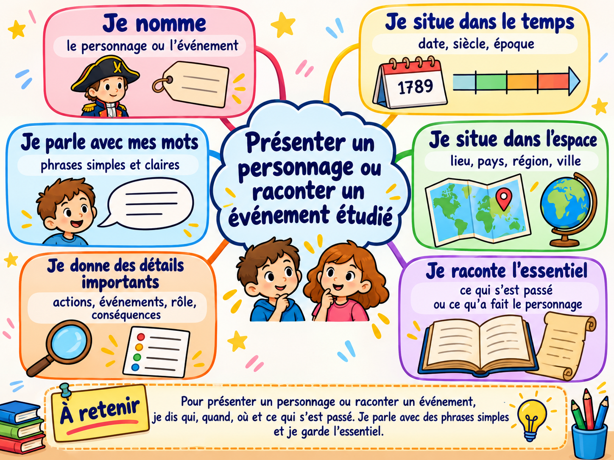

Présenter un personnage
Je dis qui c’est, quand il a vécu, où il a vécu et pourquoi il est important.
Raconter le passé avec des phrases simples et précises
Quand je présente un personnage historique ou quand je raconte un événement, je dois donner les informations les plus importantes.
Je dis qui c’est, quand il a vécu, où il a vécu et pourquoi il est important.
Je dis quand cela s’est passé, où, qui est concerné et ce qui s’est passé.
Quelles informations faut-il absolument garder pour que le récit soit clair ?
Pour bien raconter, je garde l’essentiel et je parle avec mes mots.
